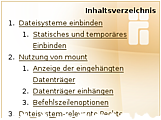
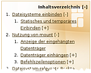

Textbausteine
Das Wiki von Ubuntuusers.de kennt eine Reihe von automatisierten Textbausteinen (Vorlagen), deren Benutzung im folgenden erläutert werden. Textbausteine dienen dazu, um
festgelegte Formatierungen einzustellen (z.B.: Befehle)
grafische Textboxen zu erstellen (z.B.: Hinweise)
bestimmte Sachverhalte Wiki-konform darzustellen (z.B.: Paketinstallation)
Sie erleichtern dem Autor die Einhaltung der Syntax und dienen auch dazu, einen Artikel ansprechend zu gestalten. Beispiel Experten-Textbaustein:
Experten-Info:
Die Textbausteine werden technisch gesehen in Makros und Parsern unterschieden. Der wesentliche Unterschied zwischen Makros und Parsern ist, dass Makros einen festen Text haben bzw. nur einige wenige Parameter übergeben werden können, während Parser frei mit Text gefüllt werden können. Makros erkennt man an den eckigen Klammern, Parser erkennt man an den geschweiften Klammern.
Die meisten der hier beschriebenen Textbausteine finden sich in der Editorleiste im Menü "Textbausteine":
Am Anfang eines Artikels¶
Baustelle¶
Verwendung: Nur in Artikeln zu verwenden, die gerade in der Baustelle erstellt werden.
Syntax¶
[[Vorlage(Baustelle, Datum, Bearbeiter)]]
| Optionen: | |
Datum | Das geplante Fertigstellungsdatum |
Bearbeiter | Der (eigene) Benutzernutzername. Enthält der Name Leer- oder Sonderzeichen, so muss man ihn zwingend in Anführungszeichen schreiben. Weitere Bearbeiter können durch Kommas getrennt hinzugefügt werden. |
Beispiel¶
Code:
[[Vorlage(Baustelle, 4.2.2042, "Bearbeiter 1", Bearbeiter2)]]
Ergebnis:
Artikel in Arbeit
Dieser Artikel wird momentan von Bearbeiter 1 und Bearbeiter2 erstellt. Als Fertigstellungsdatum wurde der 4.2.2042 angegeben.
Achtung: Insbesondere heißt das, dass dieser Artikel noch nicht fertig ist und dass wichtige Teile fehlen, oder sogar falsch sein können. Bitte diesen Artikel nicht als Anleitung für Problemlösungen benutzen!
Getestet¶
Verwendung: Am Anfang eines Wiki-Artikels. Hiermit wird gekennzeichnet, für welche Ubuntuversionen der Artikel Gültigkeit hat. Die getestet-Box ist in den Artikeln, die mehrere Programme auflisten, wie z.B. Übersichtsseiten, nicht erforderlich.
Syntax¶
[[Vorlage(Getestet, Ubuntuversionen)]]
| Optionen: | |
Ubuntuversionen | Eine durch Kommata getrennte Liste des ersten Teils des Codenamens. Dabei bitte nur die Ubuntu-Versionen aufführen, mit denen der Artikel auch wirklich getestet wurde. |
Beispiel¶
Code:
[[Vorlage(Getestet, trusty, xenial, artful)]]
Ergebnis:
Dieser Artikel wurde für die folgenden Ubuntu-Versionen getestet:
Ubuntu 17.10 Artful Aardvark
Ubuntu 16.04 Xenial Xerus
Ubuntu 14.04 Trusty Tahr
Besonderheiten¶
Code:
[[Vorlage(Getestet, general)]]
Ergebnis:
Dieser Artikel wurde für die folgenden Ubuntu-Versionen getestet:
Dieser Artikel ist größtenteils für alle Ubuntu-Versionen gültig.
Nur dann einzusetzen, wenn der Artikel allgemein gültig ist. Das können in der Regel nur Konzepte (Booten, Dienste, usw.) sein, Programme sind fast immer versionsabhängig. Eine Ausnahme stellen beispielsweise die grundlegenden Werkzeuge coreutils und viele Shell-Befehle dar, die aus Kompatibilitätsgründen sehr selten geändert werden.
Hinweis:
Bitte beachten: "Getestet, general" ist nicht das gleiche wie "Getestet, (alle aktuellen Ubuntu-Versionen)"!
Code:
[[Vorlage(Getestet, )]]
Ergebnis:
Dieser Artikel wurde für die folgenden Ubuntu-Versionen getestet:
Dieser Artikel ist mit keiner aktuell unterstützten Ubuntu-Version getestet! Bitte diesen Artikel testen und das getestet-Tag entsprechend anpassen.
Diese Markierung darf ausschließlich gesetzt werden, wenn ein Artikel mit der Zeit veraltet ist und nach und nach alle anderen Ubuntuversionen aus dem Getestet-Makro herausgefallen sind. Artikel mit "ungetestet"-Markierung bleiben dann noch bis zu sechs Monate im Wiki und werden anschließend ins Archiv verschoben. Wird diese Vorlage im Sinne von "ungetestet" benutzt, so ist auch gleichzeitig in der zugehörigen Diskussion ein entsprechender Hinweis zu veröffentlichen.
Ubuntu Touch¶
Analog zur Vorlage „Getestet“ funktioniert die Vorlage „UT“. Sie ist vorerst temporär eingebaut, um Artikel die spezifisch für Ubuntu Touch sind, zu kennzeichnen.
Code:
[[Vorlage(UT, vivid)]]
Ergebnis:
Dieser Artikel bezieht sich auf Ubuntu Touch, die Variante von Ubuntu für mobile Geräte mit Touchscreen.
Getestet wurde der Artikel für folgende Version(en):
Ubuntu Touch 15.04 Vivid Vervet
Die Vorlage wird bei Bedarf noch verändert oder in die bestehende Vorlage eingebaut.
Wissensblock¶
Verwendung: Verweise auf grundlegende Artikel, die zum Verständnis des Artikels hilfreich sind. Der Wissensblock ist neben dem Getestet-Tag ein zentraler Bestandteil eines Artikels. Hier sollten die für den Artikel relevanten Grundlagen verlinkt sein. Gehört in fast jeden Artikel.
Syntax¶
{{{#!vorlage Wissen
[:Link zu Wikiartikel1: Beschreibung1]
[:Link zu Wikiartikel2: Beschreibung2]
[:Link zu Wikiartikel3: Beschreibung3], optional
}}}
| Optionen: | |
[:Link zu Wikiartikel: Beschreibung] | Pro Zeile ein Link zum jeweiligen Grundlagenartikel |
Einen vorgefertigten Wissensblock mit allen Grundlagenartikeln findet man in Wiki/Kopiervorlage. Möchte man z.B. bei verschiedenen Installationsvarianten darauf hinweisen, das eine Möglichkeit ausreicht, kann man den Zusatz optional verwenden.
Beispiel¶
Code:
{{{#!vorlage Wissen
[:Pakete installieren: Installation von Programmen]
[:Editor: Einen Editor öffnen]
[:Terminal: Ein Terminal öffnen], optional
}}}Ergebnis:
Zum Verständnis dieses Artikels sind folgende Seiten hilfreich:
Automatischer Link zum Wissensblock im Artikeltext¶
Im Text verwendet man einfach die entsprechende Nummer in eckigen Klammer als Verweis auf den Wissensblock. Inyoka setzt dann automatisch den entsprechenden Link.
Code:
... Das Paket '''foo''' kann dann einfach installiert [1] werden.
Ergebnis:
"... Das Paket foo kann dann einfach installiert [1] werden."
Inhaltsverzeichnis¶
|  |  |
| Ohne Javascript; Stufe 2 | Mit Javascript |
Verwendung: Direkt vor dem Einleitungstext platziert, verschafft das Inhaltsverzeichnis einen Überblick und dient dazu, bestimmte Abschnitte schnell anspringen zu können. Das Inhaltsverzeichnis wird automatisch aus den Überschriften generiert. Ist Javascript eingeschaltet, wird das Inhaltsverzeichnis automatisch mit den Zeichen [+] und [-] erweitert, mit welchem man die einzelnen Überschriften aus- und einklappen kann.
Syntax¶
[[Inhaltsverzeichnis(Überschriftenstufe)]]
| Optionen: | |
Überschriftenstufe | Die Tiefe des Inhaltsverzeichnisses. Erlaubt sind Zahlen von 1 bis 6. Wird Überschriftenstufe nicht angegeben, wird die Voreinstellung 3 genommen. |
Allgemeine Formatierungshilfen¶
Befehle¶
Verwendung: Für Shell-Befehle
Beispiel¶
cat /etc/fstab sudo fdisk -l
Für die Ausgabe von Shell-Befehlen ist ein einfacher Code-Block zu verwenden (in der Menüleiste das Symbol  ).
).
Allgemeine Beispiele für Programmaufrufe im Terminal werden wie folgt formatiert. Hier ein Beispiel für das fiktive Programm foobar:
foobar [OPTIONEN] DATEI
Parameter wie OPTIONEN, DATEI etc. werden in Großbuchstaben geschrieben. Ist die Angabe einer Option, eines Dateinamens usw. wahlfrei, so wird dies durch die umschließenden eckigen Klammer [ und ] gekennzeichnet: [OPTIONEN]. Pflichtangaben, wie im obigen Beispiel DATEI, erhalten keine Klammern. Auf die Verwendung anderer Klammern wie { } < > ( ) sollte verzichtet werden, da sie auf der Kommandozeile eine Sonderrolle spielen.
Hinweise¶
Verwendung: Besondere Hervorhebung von Sachverhalten.
Warnungen¶
Verwendung: Hinweis auf potenzielle Gefahren.
Paketinstallation¶
Je nach Quelle eines Paketes, sind unterschiedliche Textbausteine vorhanden:
Textbausteine für Pakete aus den Ubuntuquellen:
Andere Quellen:
PPA-Vorlage- Textbaustein für Pakete von Launchpad
Fremdquellen-Vorlage - Textbausteine für Fremdpakete mit Eintrag in sources.list; Installation über Paketverwaltung
Fremdpaket-Vorlage - Textbausteine für Pakete, die heruntergeladen werden müssen; Installation über Paketinstallation DEB
Pakete-Makro¶
Hinweis:
Der Textbaustein Pakete-Makro sollte nur noch selten verwendet werden. Siehe Textbaustein Paketinstallation.
Verwendung: Erstellt aus einer Paketliste die Befehlszeile für apt-get oder aptitude. Diese Befehlszeile kann dann einfach per Kopieren & Einfügen in ein Terminal übertragen werden. Zudem wird ein Link für apturl generiert, der das gleiche bewirkt wie der Installationsknopf bei Paketinstallation.
Syntax¶
[[Vorlage(Pakete, Paketliste)]]
| Optionen: | |
Paketliste | Eine kommaseparierte Liste von Paketnamen. |
Beispiel¶
Code:
[[Vorlage(Pakete, paket1, paket2)]]
Ergebnis:
Paketliste zum Kopieren:
sudo apt-get install paket1 paket2
sudo aptitude install paket1 paket2
Paketinstallation¶
Verwendung: Erstellt eine wikikonform formatierte Paketliste mit Installationsknopf. Die Verwendung dieses Textbausteines ist allerdings nicht immer sinnvoll, insbesondere dann nicht, wenn für unterschiedliche Ubuntuversionen verschiedenen Pakete verwendet werden müssen, oder sich Paketnamen von Version zu Version geändert haben. In diesen Fällen ist es besser mehrere Pakete-Makros zu verwenden.
Bei Angabe von mehr als 3 Paketen wird automatisch das Pakete-Makro angehängt.
Hinweis:
Damit der Installationsknopf im eigenen Browser auch richtig funktioniert, muss apturl installiert und richtig konfiguriert sein.
Syntax¶
{{{#!vorlage Paketinstallation
paketname, Information
paketname, Information
}}}
| Optionen: | |
paketname | Der Name des Paketes |
Information | Optional, sollte aber mindestens die Komponente enthalten. Ist ein Paket erst ab einer bestimmten Version verfügbar, so sollte auch diese Information dort festgehalten sein. |
Beispiel¶
Code:
{{{#!vorlage Paketinstallation
paket0
paket1, main
paket2, restricted ab Precise
paket3, universe, ab Lucid
paket4, multiverse ab Lucid, universe ab Natty
paket5, security, ab hardy - sowas aber auch
paket6, ppa
paket9, partner ab precise
}}}Ergebnis:
paket0
paket1 (main)
paket2 (restricted ab Precise)
paket3 (universe, ab Lucid)
paket4 (multiverse ab Lucid, universe ab Natty)
paket5 (security, ab hardy - sowas aber auch)
paket6 (ppa)
paket9 (Canonical Partner ab precise)
 mit apturl
mit apturl
Paketliste zum Kopieren:
sudo apt-get install paket0 paket1 paket2 paket3 paket4 paket5 paket6 paket9
sudo aptitude install paket0 paket1 paket2 paket3 paket4 paket5 paket6 paket9
PPA-Vorlage¶
Verwendung: Erstellt einen wikikonformen Abschnitt für das Einfügen von Launchpad/PPAs inklusive Warnung und Link zu den PPA-Quellen.
Beispiel (Code für die Pidgin Quellen)¶
Code:
[[Vorlage(PPA, pidgin-developers, ppa)]]
Ergebnis:
Adresszeile zum Hinzufügen des PPAs:
ppa:pidgin-developers/ppa
Hinweis!
Zusätzliche Fremdquellen können das System gefährden.
Ein PPA unterstützt nicht zwangsläufig alle Ubuntu-Versionen. Weitere Informationen sind der  PPA-Beschreibung des Eigentümers/Teams pidgin-developers zu entnehmen.
PPA-Beschreibung des Eigentümers/Teams pidgin-developers zu entnehmen.
Damit Pakete aus dem PPA genutzt werden können, müssen die Paketquellen neu eingelesen werden.
Fremdquellen-Vorlage¶
Verwendung: Für Pakete aus anderen Quellen als Ubuntu oder Launchpad. Können diese Quellen auch authentifiziert werden, so kann man den Baustein Fremdquellen authentifizieren Vorlage verwenden.
Syntax¶
[[Vorlage(Fremdquelle, URL zur Fremdquelle, Ubuntuversionen, Komponenten)]]
| Optionen: | |
URL | Link zur Quelle |
Ubuntuversion(en) | Liste der Versionensnamen, falls vorhanden. Die einzelnen Versionen werden klein geschrieben und sind nicht durch eine Leerzeichen getrennt. Beispiel: trusty xenial |
Komponenten | Sind in dieser Quelle auch Komponenten angegeben, so sind diese hier aufzuführen. Mehrere Komponenten werden einfach durch ein Leerzeichen getrennt geschrieben. Beispiel: main universe |
Beispiel 1: versionsabhängige Quelle mit einer Komponente¶
Code:
[[Vorlage(Fremdquelle, http://linux.getdropbox.com/ubuntu, trusty xenial, main)]]
Ergebnis:
Um aus der Fremdquelle zu installieren, muss man die folgenden Paketquellen freischalten:
Hinweis!
Zusätzliche Fremdquellen können das System gefährden.
deb http://linux.getdropbox.com/ubuntu VERSION main
Beispiel 2: versionsunabhängige Quelle mit zwei Komponenten¶
Code:
[[Vorlage(Fremdquelle, http://download.bitdefender.com/repos/deb/, bitdefender non-free)]]
Ergebnis:
Um aus der Fremdquelle zu installieren, muss man unabhängig von der Ubuntu-Version die folgende Paketquelle freischalten:
Hinweis!
Zusätzliche Fremdquellen können das System gefährden.
deb http://download.bitdefender.com/repos/deb/ bitdefender non-free
Fremdquellen-authentifizieren-Vorlage¶
Verwendung: Mit folgendem Baustein können die Angaben zur Authentifizierung der Fremdquellen automatisch ausgegeben werden. Es stehen zwei Varianten zur Verfügung.
Syntax¶
[[Vorlage(Fremdquelle-auth, key PGP-Schlüsselnummer)]] [[Vorlage(Fremdquelle-auth, URL zum PGP-Schlüssel)]]
| Optionen: | |
key PGP-Schüsselnummer | HInter dem Wort key ist die Schlüsselnummer anzugeben. |
URL zum PGP-Schlüssel | Der Link zur Schlüsseldatei. |
Beispiel 1: Mit Angabe der Schlüsselnummer¶
Code:
[[Vorlage(Fremdquelle-auth, key 6E80C6B7)]]
Ergebnis:
Um die Fremdquelle zu authentifizieren, kann man den Signierungsschlüssel mit folgendem Befehl importieren:
sudo apt-key adv --recv-keys --keyserver keyserver.ubuntu.com 6E80C6B7
Beispiel 2: Mit Angabe der URL¶
Code:
[[Vorlage(Fremdquelle-auth, http://download.virtualbox.org/virtualbox/debian/sun_vbox.asc)]]
Ergebnis:
Um die Fremdquelle zu authentifizieren, kann man
entweder den Signierungsschlüssel herunterladen  und in der Paketverwaltung hinzufügen oder folgenden Befehl ausführen:
und in der Paketverwaltung hinzufügen oder folgenden Befehl ausführen:
wget -q http://download.virtualbox.org/virtualbox/debian/sun_vbox.asc -O- | sudo apt-key add -
Fremdpaket-Vorlage¶
Verwendung: Vereinfachung der Angaben zur Installation von DEB-Paketen aus Fremdquellen. Es stehen drei Varianten zur Verfügung.
Syntax¶
[[Vorlage(Fremdpaket, Projekthoster, Projektname, Ubuntuversion(en))]] [[Vorlage(Fremdpaket, "Anbieter", URL Downloadübersicht, Ubuntuversion(en))]] [[Vorlage(Fremdpaket, "Anbieter", dl, URL Datei, (weitere Download-URLs möglich), Ubuntuversion(en))]]
| Optionen: | |
Projekthoster | Mögliche Angaben sind: launchpad (Launchpad  ), ), sourceforge(Sourceforge ) oder googlecode (GoogleCode ) |
Projektname | Der Name des unter Projekthoster zu findenden Projektes |
| Mit Direktlink zu einem oder mehreren Paketen | |
dl | Stellt das Downloadsymbol () zur Verfügung. |
URL Datei | Direkter Link zu einem herunterladbaren Paket. Mehrere Pakete können durch Kommata getrennt angegeben werden. Bei mehr als zwei Dateien sollte jedoch auf eine Downloadübersicht verlinkt werden. |
Ubuntuversion(en) | Optionale Angabe. Wenn angegeben, müssen die Versionen klein geschrieben werden. Beispiel: trusty xenial |
Beispiele¶
Code:
[[Vorlage(Fremdpaket, launchpad, songbird, trusty, xenial, artful)]]
Ergebnis:
Beim Launchpad-Projekt songbird werden DEB-Pakete angeboten. Die Pakete können für Ubuntu 14.04, Ubuntu 16.04 und Ubuntu 17.10 heruntergeladen werden. Nachdem man sie für die korrekte Ubuntuversion und Architektur geladen hat, müssen DEB-Pakete noch installiert werden.
Hinweis!
Fremdpakete können das System gefährden.
Code:
[[Vorlage(Fremdpaket, sourceforge, utube)]]
Ergebnis:
Beim SourceForge-Projekt utube werden DEB-Pakete angeboten. Die unterstützten Ubuntuversionen und Architekturen werden aufgelistet. Nachdem man sie für die korrekte Ubuntuversion und Architektur geladen hat, müssen DEB-Pakete noch installiert werden.
Hinweis!
Fremdpakete können das System gefährden.
Code:
[[Vorlage(Fremdpaket, "[http://skype.com/intl/de/ Skype] {de}", http://www.skype.com/download/skype/linux/choose/, xenial)]]Ergebnis:
Von Skype  werden
DEB-Pakete angeboten.
Die Pakete können für Ubuntu 16.04
heruntergeladen werden.
Nachdem man sie für die korrekte Ubuntuversion und Architektur geladen hat, müssen DEB-Pakete noch installiert werden.
werden
DEB-Pakete angeboten.
Die Pakete können für Ubuntu 16.04
heruntergeladen werden.
Nachdem man sie für die korrekte Ubuntuversion und Architektur geladen hat, müssen DEB-Pakete noch installiert werden.
Hinweis!
Fremdpakete können das System gefährden.
Code:
[[Vorlage(Fremdpaket, Skype, dl, http://www.skype.com/go/getskype-linux-beta-ubuntu-32, http://www.skype.com/go/getskype-linux-beta-ubuntu-64, trusty, xenial)]]
Ergebnis:
Von Skype werden folgende DEB-Pakete angeboten:
Die Pakete können für Ubuntu 14.04 und Ubuntu 16.04 heruntergeladen werden. Nachdem man sie für die korrekte Ubuntuversion und Architektur geladen hat, müssen DEB-Pakete noch installiert werden.
Hinweis!
Fremdpakete können das System gefährden.
Sonstige Bausteine¶
Hier sind Textbausteine aufgeführt, die normalerweise nur vom Wikiteam gesetzt werden, oder veraltet sind.
Ausbaufähig-Markierung¶
Verwendung: Ist ein Artikel unvollständig oder kann noch erweitert werden (wichtig: unvollständig heißt aber trotzdem in sich schlüssig und nicht fehlerhaft!), dann kann man diese Makro nutzen.
Syntax¶
[[Vorlage(Ausbaufähig, "Begründung")]]
| Optionen: | |
Begründung | Ein kurzer, aussagekräftiger Text, der den fehlenden Teil beschreibt. |
Beispiel¶
Ausbaufähige Anleitung
Dieser Anleitung fehlen noch einige Informationen. Wenn Du etwas verbessern kannst, dann editiere den Beitrag, um die Qualität des Wikis noch weiter zu verbessern.
Anmerkung: Es fehlt der noch komplette Abschnitt zur Konfiguration.
Fehlerhaft-Markierung¶
Verwendung: Stimmen Angaben bzw. ganze Abschnitte in einem Wiki Artikel nicht, so kann dieser mit der "Fehlerhaft"-Markierung versehen werden, die das Problem beschreibt.
Syntax¶
[[Vorlage(Fehlerhaft, "Begründung")]]
| Optionen: | |
Begründung | Ein kurzer, aussagekräftiger Text, der den fehlerhaften Teil beschreibt. |
Beispiel¶
Fehlerhafte Anleitung
Diese Anleitung ist fehlerhaft. Wenn du weißt, wie du sie ausbessern kannst, nimm dir bitte die Zeit und bessere sie aus.
Anmerkung: Das Programm lässt sich so nicht kompilieren, es fehlen anscheinend Header-Dateien.
Verlassen-Markierung¶
Verwendung: Diese Markierung wird normalerweise nur für Baustellen Artikel genutzt, die der Originalautor nicht mehr zu Ende bringt (warum auch immer). Dieser Artikel kann von jedem Nutzer ohne weitere Rückfragen zu Ende geführt werden.
Syntax¶
[[Vorlage(Verlassen, "Begründung")]]
| Optionen: | |
Begründung | Ein kurzer, aussagekräftiger Text. |
Beispiel¶
Verlassene Anleitung
Dieser Artikel wurde von seinem Ersteller verlassen und wird nicht mehr weiter von ihm gepflegt. Wenn Du den Artikel fertigstellen oder erweitern kannst, dann bessere ihn bitte aus.
Anmerkung: Der Installationsteil muss komplettiert werden, der Teil zu Bedingung fehlt komplett.
Überarbeitungs-Markierungen¶
Wird ein Artikel zur Überarbeitung in die Baustelle verschoben, kommen zwei Vorlagen zum Einsatz:
Die Vorlage "Kopie" wird nur von den Wiki-Moderatoren benötigt um den Artikel zu markieren, der als Originalkopie einer Seite im normalen Wiki verbleibt.
Die Vorlage "Überarbeitung" ist für die Baustelle, in der der Artikel überarbeitet wird.
Syntax¶
[[Vorlage(Kopie, Seite)]] [[Vorlage(Überarbeitung, Datum, Original, Autor)]]
| Optionen: | |
Seite | Der Name der Seite, wie er in der Baustelle heißt. |
Datum | Voraussichtliche Fertigstellung der Baustelle. Möchte man das Datum auslassen, so muss ein Leerstring ("") angegeben werden. |
Original | Der Name des Artikels im Wiki. |
Autor | Optional; der Name des Benutzers, der den Artikel überarbeitet. Bei Benutzernamen mit Leerzeichen muss der gesamte Namen in Anführungszeichen stehen. |
Beispiel¶
[[Vorlage(Überarbeitung, "", foo, "Max Mustermann")]]
Ergebnis:
Artikel wird überarbeitet
Dieser Artikel wird momentan überarbeitet.
Geplante Fertigstellung:
Derzeitig gültiger Artikel: foo
Bearbeiter: Max Mustermann
Solltest du dir nicht sicher sein, ob an dieser Anleitung noch gearbeitet wird, kontrolliere das Datum der letzten Änderung und entscheide, wie du weiter vorgehst.
Achtung: Insbesondere heißt das, dass dieser Artikel noch nicht fertig ist und dass wichtige Teile fehlen oder sogar falsch sein können. Bitte diesen Artikel nicht als Anleitung für Problemlösungen benutzen!
Fremdquelle-, Fremdpakete- und Fremdsoftware-Warnung¶
Verwendung: Ein "Muss" für Pakete, die nicht aus den offiziellen Paketquellen von Ubuntu stammen.
Ebenso ist die Warnung einzusetzen, wenn die manuelle Installation von Fremdsoftware beschrieben wird, z.B. über ein Installations-Skript.
"Kommentar" ist immer optional und kann auch komplett weggelassen werden.
Fremdpakete¶
Gilt nur für ein Paket aus einer externen Quelle (z.B. ein Paket, welches von der Projekthomepage heruntergeladen wurde)
| Code: | [[Vorlage(Fremd, Paket, "Kommentar")]] |
Ergebnis:
Hinweis!
Fremdquellen¶
Gilt nur für Pakete, welche aus externen Quellen installiert werden, die in der eigenen sources.list eingetragen sind.
| Code: | [[Vorlage(Fremd, Quelle, "Kommentar")]] |
Ergebnis:
Hinweis!
Fremdsoftware¶
Bei Software, welche nicht über die Paketverwaltung aus den Paketquellen installiert wird (beispielsweise Archive mit vorkompilierten Binärdateien, Browser-Erweiterungen, programmspezifische Add-ons, etc.) ist grundsätzlich die Fremdsoftware-Warnbox zu setzen:
| Code: | [[Vorlage(Fremd, Software, "Kommentar")]] |
Ergebnis:
Hinweis!
Weitere Vorlagen¶
Zu diesen Vorlagen gibt es eine eigene Hilfe-Seite:
Projekte - Vorlage zur übersichtlichen Darstellung von verschiedenen Projekten
IM - Vorlage zum Vergleich verschiedener Instant Messenger
Infobox - Vorlage um übliche Informationen außerhalb des Fließtextes gebündelt anzuzeigen
Vorlagen in Boxen verwenden¶
Um innerhalb einer Hinweis- Warn- oder Expertenbox z.B. einen Befehl zu integrieren, muss das Ende der inneren Befehlsvorlage mit \ maskiert werden, weil sonst die }}} als Ende der ersten Vorlage interpretiert werden; nachfolgender Text wird nicht mehr in der Box dargestellt, und es bleiben am Ende die }}} der äußeren Vorlage stehen.
Beispiel¶
Anders wie hier dargestellt, darf kein Leerzeichen zwischen dem \ und den }}} stehen. Leider ist die Darstellung hier im Codeblock nicht ohne Leerzeichen möglich.
{{{#!vorlage Hinweis
Das Programm muss mit
{{{#!vorlage Befehl
start
\ }}}
gestartet werden
}}}Ergebnis:
Hinweis:
Das Programm muss mit
start
gestartet werden
- Erstellt mit Inyoka
-
 2004 – 2017 ubuntuusers.de • Einige Rechte vorbehalten
2004 – 2017 ubuntuusers.de • Einige Rechte vorbehalten
Lizenz • Kontakt • Datenschutz • Impressum • Serverstatus -
Serverhousing gespendet von